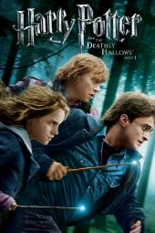

places must visit

BOOK SHOP
The Greatest Ever Book Shop In The World
Bookshop is an online bookstore with a mission to financially support local, independent bookstores. We believe that bookstores are essential to a healthy culture. They’re where authors can connect with readers, where we discover new writers, where children get hooked on the thrill of reading that can last a lifetime. They’re also anchors for our downtowns and communities.
Harry Potter and the Philosopher's Stone

I can honestly say from the bottom of my heart, with every ounce of my being, that the Harry Potter books are among some of the most well-developed, thoroughly planned, terrifically intriguing, thought-provoking and meaningful books I have ever read.
Harry Potter and the Chamber of Secrets

The best. I like the 2nd chapter than any other. It has a lot of mysteries. I like the part when the trio uses the poly juice potion.It's a good comedy scene. And when Harry Potter enters the chamber he finds Ginny and Tom Riddle.He speaks parselmouth in the film which makes it much more interesting.
Harry Potter and the Prisoner of Azkaban

Harry Potter is an amazing book, that is suitable for any age! It is a must to watch it or read it... There are many plots in the book, prisoner of Azkaban but I suggest If you're new to the series you start with the first book, so it makes it less complicated
Harry Potter and the Goblet of Fire

This is a GREAT book. My favorite Harry Potter book in the entire saga. This is such an enjoyable, fun, dark, funny, and cute experience that does not disappoint. The movie is very fast paced with a lot of amazing action sequence that are very rememberable. The whole cast does an amazing job acting as well.
Harry Potter and the Order of the Phoenix

This book is ABSOLUTELY AMAZING! I loved it! The magical effects were high-quality and my friends and family also enjoyed it! I would definitely recommend watching this movie, along with the other movies in the series. If you are younger than 7, though, it might be a bit frightening, but otherwise DEFINITELY watch this movie [series]!
Harry Potter and the Half - Blood Prince

Everyone must watch Harry Potter movies or read books.No matter if you're a child, adolescent, adult or old.The best movie series made and it will be the best. The dialogues,the scenes each and every part of the movies are heart warming. The kind of feeling that they give is very great.
Harry Potter and the Deathly Hallows ( Part 1 )
Well acted and wonderfully shot, Harry Potter and the Deathly Hallows - Part 1 takes a darker, more emotional approach then previous films - which gives the film the weight it so deserves.
Harry Potter and the Deathly Hallows ( Part 2 )